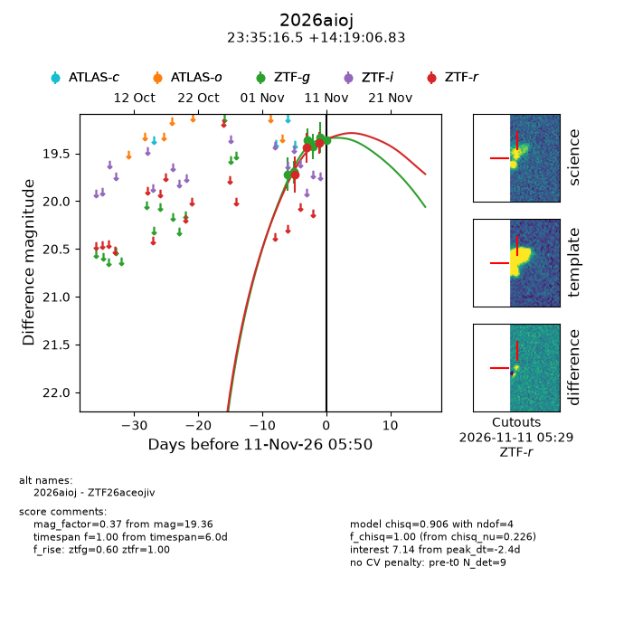
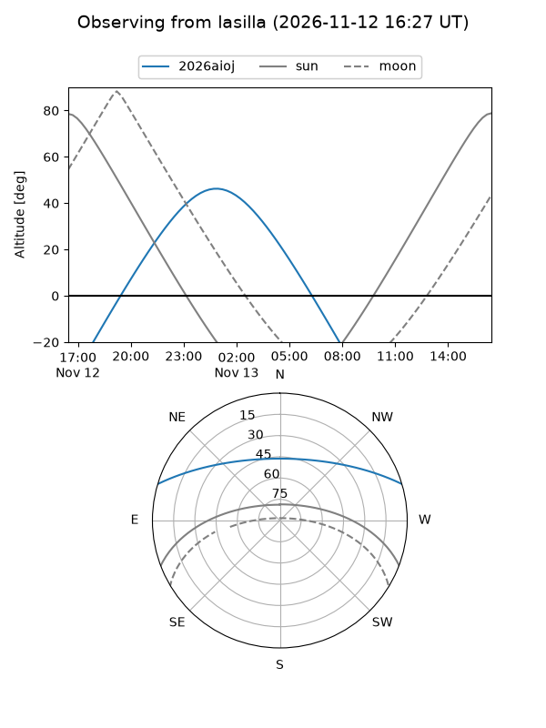
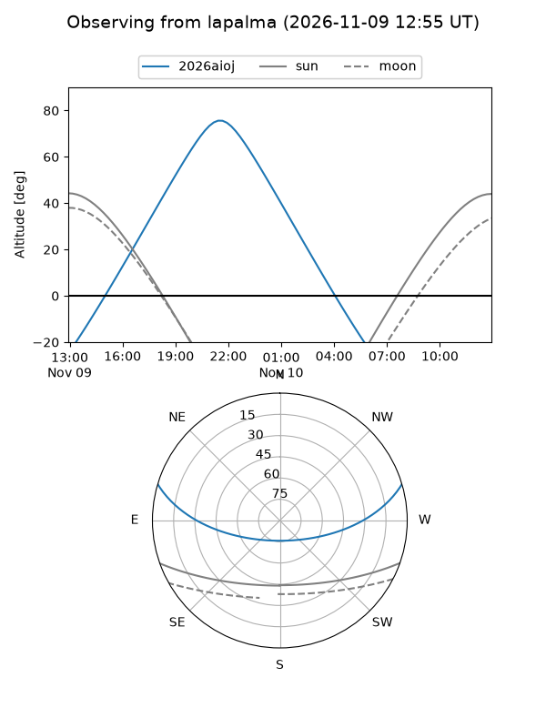
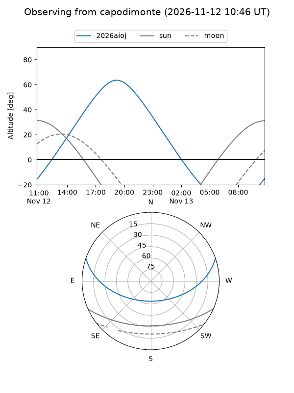
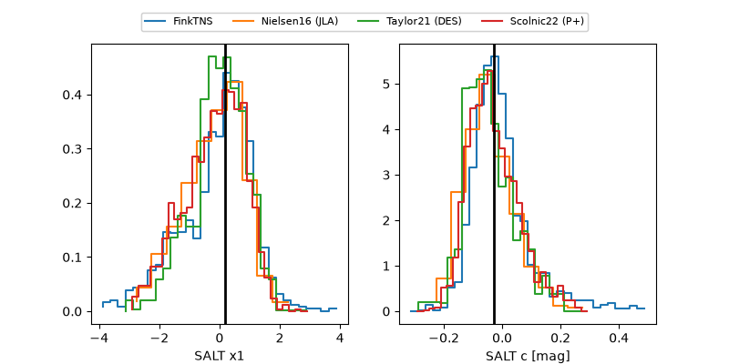

2026aioj
Target 2026aioj at 2026-11-11 05:52
Aliases and brokers:
FINK-ZTF: ztf.fink-portal.org/ZTF26aceojiv
Lasair-ZTF: lasair-ztf.lsst.ac.uk/objects/ZTF26aceojiv
ALeRCE-ZTF: alerce.online/object/ZTF26aceojiv
YSE-PZ: ziggy.ucolick.org/yse/transient_detail/2026aioj
TNS name: wis-tns.org/object/2026aioj
Direct TNS query: direct search
alt names
ZTF26aceojiv (ztf,fink_ztf)
2026aioj (tns,yse)
Coordinates:
equatorial (ra, dec) = 353.8186,+14.31856
equatorial (HMS+DMS) = 23:35:16.47,+14:19:06.83
galactic (l, b) = (96.5661,-44.61895)
Flags:
peak dt: -2.4
Photometry:
last ztfg=19.36, ztfr=19.39
6 ztfg, 3 ztfr detections
Lightcurve

Visibility



Additional plots
